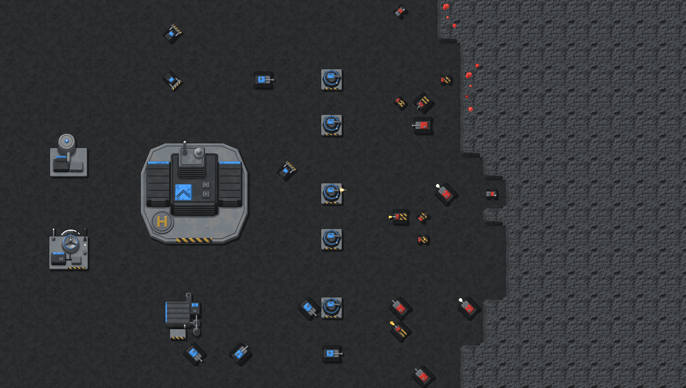
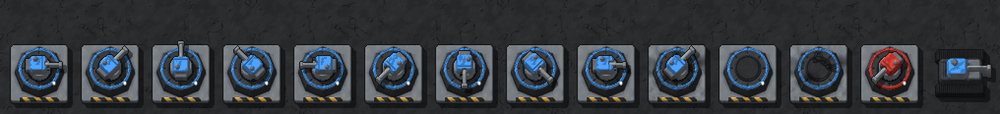
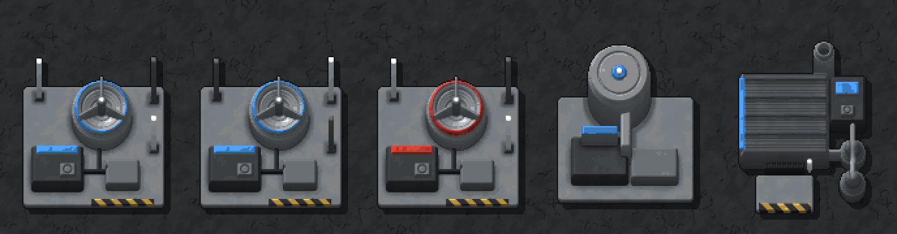
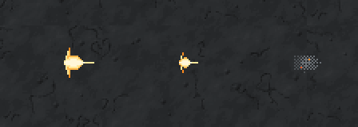
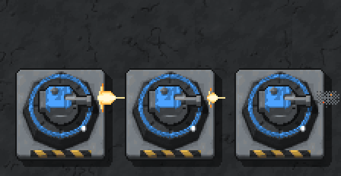
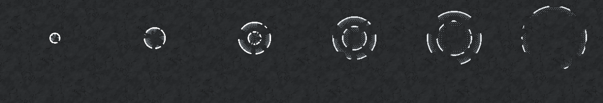
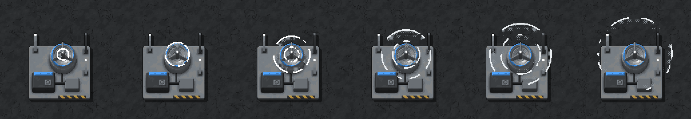

<title>v0.13 Bastion Art</title>
<meta name="claude:viewport-fit-sides" content="cover">
<link rel="preconnect" href="https://fonts.googleapis.com">
<link rel="stylesheet" href="https://fonts.googleapis.com/css2?family=Jersey+10&family=IBM+Plex+Sans:wght@400;600&display=swap">
<style>
/* Layout: one reading column of labelled sprite sheets on the game's charcoal, wide sheets scroll inside their frame. Single dark look on purpose: the art is judged against the in-game floor. */
:root {
  --bg: #15191e;
  --panel: #20262d;
  --edge: #323b45;
  --text: #e8edf2;
  --muted: #aab6c2;
  --gold: #f2c14e;
  --display: "Jersey 10", "Courier New", monospace;
  --body: "IBM Plex Sans", system-ui, sans-serif;
  color-scheme: dark;
}
body { background: var(--bg); color: var(--text); font: 15px/1.55 var(--body); }
main { max-width: 1180px; margin: 0 auto; padding-block: 28px 64px; padding-left: max(16px, env(safe-area-inset-left, 0px)); padding-right: max(16px, env(safe-area-inset-right, 0px)); display: grid; gap: 22px; }
h1, h2 { font-family: var(--display); font-weight: 400; letter-spacing: 0.02em; text-wrap: balance; margin: 0; }
h1 { font-size: 44px; line-height: 1; }
h2 { font-size: 28px; line-height: 1.1; }
p { margin: 0; max-width: 68ch; color: var(--muted); }
p strong { color: var(--text); font-weight: 600; }
.lede { display: grid; gap: 8px; }
section { background: var(--panel); border: 1px solid var(--edge); padding: 16px; display: grid; gap: 10px; min-width: 0; }
.sheet { overflow-x: auto; border: 1px solid var(--edge); background: var(--bg); }
.sheet img { display: block; max-width: none; height: auto; image-rendering: pixelated; }
.sheet img.fit { max-width: 100%; }
.stats { font-family: var(--display); font-size: 19px; color: var(--gold); letter-spacing: 0.03em; }
ol { margin: 0; padding-left: 22px; display: grid; gap: 8px; max-width: 74ch; }
ol li { color: var(--muted); }
ol li strong { color: var(--text); }
code { font-size: 13px; color: var(--text); }
.sounds { display: grid; grid-template-columns: repeat(auto-fill, minmax(260px, 1fr)); gap: 10px; }
.sounds figure { margin: 0; padding: 10px; border: 1px solid var(--edge); background: var(--bg); display: grid; gap: 6px; min-width: 0; }
.sounds figcaption { font-family: var(--display); font-size: 20px; color: var(--text); }
.sounds figcaption span { font-family: var(--body); font-size: 13px; color: var(--muted); margin-left: 6px; }
.sounds audio { width: 100%; }
</style>
<main>
  <div class="lede">
    <h1>v0.13 Bastion art</h1>
    <p>The Gun turret and the Jammer, drawn by code in <code>RenderGen</code> in the same lit look as the other buildings, shown in the game's pixel finish (64 px per tile), with their two effects and two sounds. Blue and red are player colours 1 and 2. Nothing is in the game's atlases yet: once you approve, the sprites go into the build. Re-render with <code>WAR-2D/Art/Render v0.13 samples</code>.</p>
  </div>

  <section>
    <h2>In game, 1:1</h2>
    <p>The v0.7 sample map with the HQ, the Barracks and the Radar, a <strong>Jammer</strong> below the Radar (pulse mid-run) and a line of five <strong>Gun turrets</strong> east of the HQ, heads turned to the nearest red unit. The middle one is firing; the top one has the damaged base.</p>
    <div class="sheet"></div>
  </section>

  <section>
    <h2>Gun turret, 2×</h2>
    <p>1×1. A <strong>base</strong> (octagonal armoured plinth on a pad, team ring, rivets, status lamp) and a <strong>head</strong> drawn over it, standing on the base rather than the ground: a raised steel mount, team gun shield with a sight hatch, counterweight, a short barrel with a muzzle brake at the mount's height, casting its shadow on the plinth, and kept over the plinth in every facing). Left to right: the head in its 8 facings (east, then anticlockwise, as units), the recoil frame, the head over the damaged base, the base alone (whole, then damaged: cracks, soot, lamp out), a red one, and the Tank for scale.</p>
    <div class="sheet"></div>
  </section>

  <section>
    <h2>Jammer, 2×</h2>
    <p>2×2. A relative of the Radar: an upturned dish (concave, team rim) with a feed horn on three struts, three whip antennas whose lamps alternate between the two frames, an equipment hut with a team band and a generator. Left to right: frame 0, frame 1, red, then the Radar and the Barracks for scale.</p>
    <div class="sheet"></div>
  </section>

  <section>
    <h2>Effects</h2>
    <p>New <code>EffectGen</code> effects. Each strip shows the frames in order, on their own at 2× and over their building.</p>
    <div class="stats">Turret muzzle · 3 frames · 1×1 · flash with brake jets, smaller flash, smoke puff · turned to the head's facing in game</div>
    <div class="sheet"></div>
    <div class="sheet"></div>
    <div class="stats">Jam pulse · 6 frames · 3×3 tiles, centred on the Jammer · two rings of static running out from the dish</div>
    <div class="sheet"></div>
    <div class="sheet"></div>
  </section>

  <section>
    <h2>Sounds</h2>
    <p>New sfxr parameter sets in <code>Assets/Art/Audio/sfx/</code>. The turret shot is a short noise crack with no low-pass (as v0.12 found for crisp shots), between the Scout's and the Tank's in weight; it fires every 0.4 s, so it is kept short. The Jammer's completion is a warbling square hum that rises an octave and holds. Older sounds are here to compare.</p>
    <div class="sounds">
      <figure><figcaption>Turret shot <span>new · short crack</span></figcaption><audio id="a-turret" controls preload="none" src="sfx/shot_turret.wav"></audio></figure>
      <figure><figcaption>Scout shot <span>v0.12</span></figcaption><audio id="a-scout" controls preload="none" src="sfx/shot_scout.wav"></audio></figure>
      <figure><figcaption>Tank shot <span>today</span></figcaption><audio id="a-tank" controls preload="none" src="sfx/shot_tank.wav"></audio></figure>
      <figure><figcaption>Jammer online <span>new · rising hum</span></figcaption><audio id="a-jammer" controls preload="none" src="sfx/jammer_online.wav"></audio></figure>
      <figure><figcaption>Construction finished <span>today</span></figcaption><audio id="a-built" controls preload="none" src="sfx/construction_finished.wav"></audio></figure>
      <figure><figcaption>Radar ping <span>today</span></figcaption><audio id="a-radar" controls preload="none" src="sfx/radar_ping.wav"></audio></figure>
    </div>
  </section>

  <section>
    <h2>Decisions</h2>
    <ol>
      <li><strong>Turret base frames (owner, 2026-10-23):</strong> frame 0 whole, frame 1 damaged; the renderer will pick the frame by health.</li>
      <li><strong>Turret head:</strong> 8 facings, plus an optional recoil frame for the shot. The head can ship with one frame if the recoil isn't wanted.</li>
      <li><strong>Jam pulse</strong> is drawn on a 3×3 canvas so the rings can spread past the Jammer's 2×2 footprint. It is decoration only: the real jam radius (12 tiles) is the selected-ring in the HUD (Figma).</li>
    </ol>
  </section>
</main>
